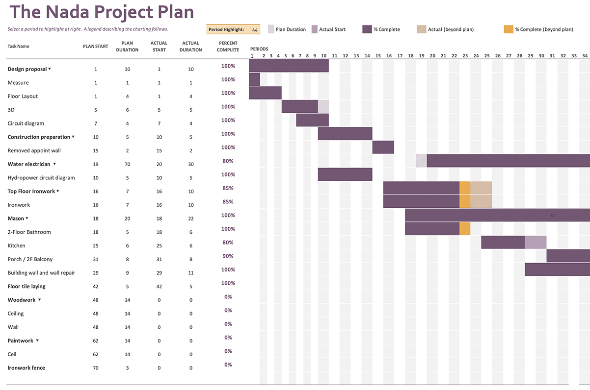
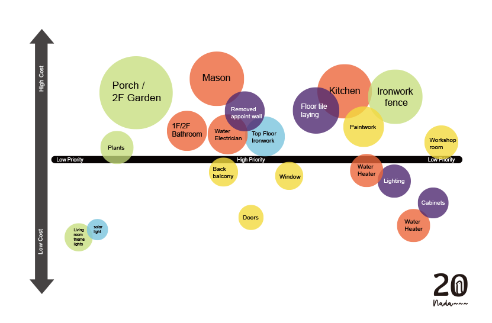
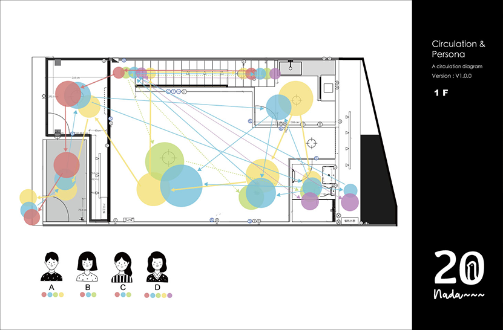
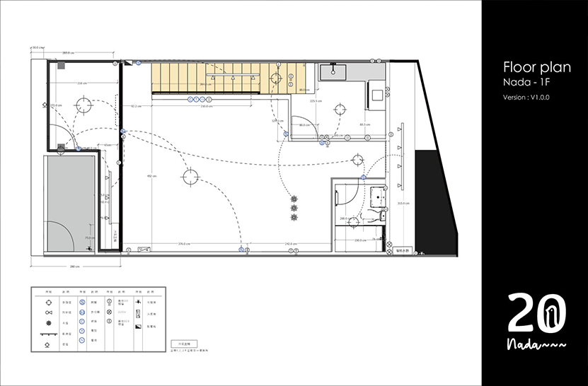
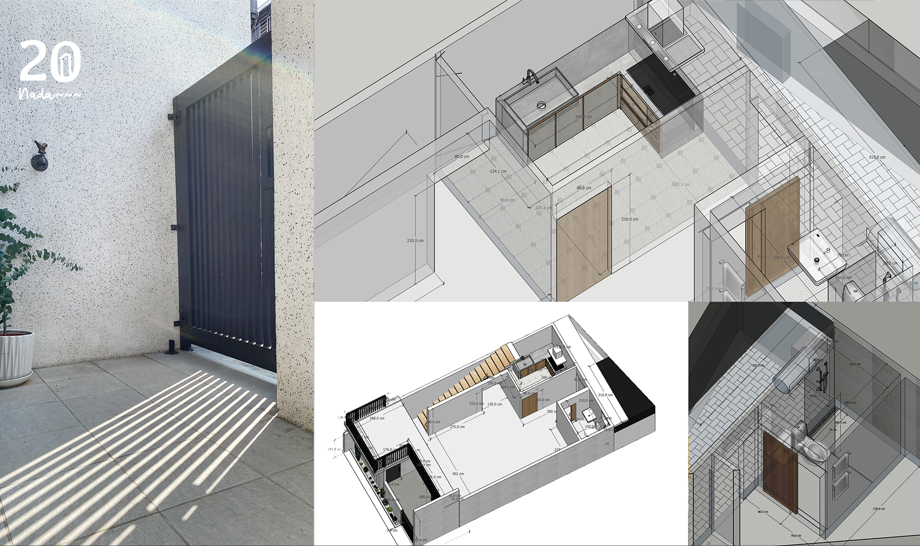

Nada 設計與使用者經驗 202003/中 ~ 202010/中
基於一切皆無、一切皆喜悅的設計主軸，整體設計架構上不與天爭地，預留了許多呼吸與循環區域，不求滿看似沒有擁有卻是讓居住者使身心靈獲得最大的滿足。整棟三層樓預留了四個空間的自然景觀，讓居住者無論在室內或室外隨處都能導引出五感的紓壓，體驗一花 、一草 、一石 、一木，活在當下感受生命延續與四季的循環變化。
專案管理
一個複雜的工作必須先做好規劃，Nada這個專案實作前在事前的規劃整體專案時程時程目標，擬定目標後工程執行上能清楚安排各種類型的工作如：專業工班實作前確認施工細節、材料進場時間、工班進場時間、交集協作時間、預算及成本控制，和專案監督及追蹤，讓在混亂的思緒中清楚掌握目前的狀況與面臨到問題。

Budget
了解預算高低與必要優先執行的級別，讓天馬行空設計想法可以讓理性與感性得到一個平衡，減少很多不切實際的想像。

利用User Experience建立Persona模擬生活路徑
利用User Experience建立Persona模擬生活路徑，情境動線安排有利於整個空間在施工實作前，能驗證是否設計上有哪些疏漏或不合理的設計。

設計稿

